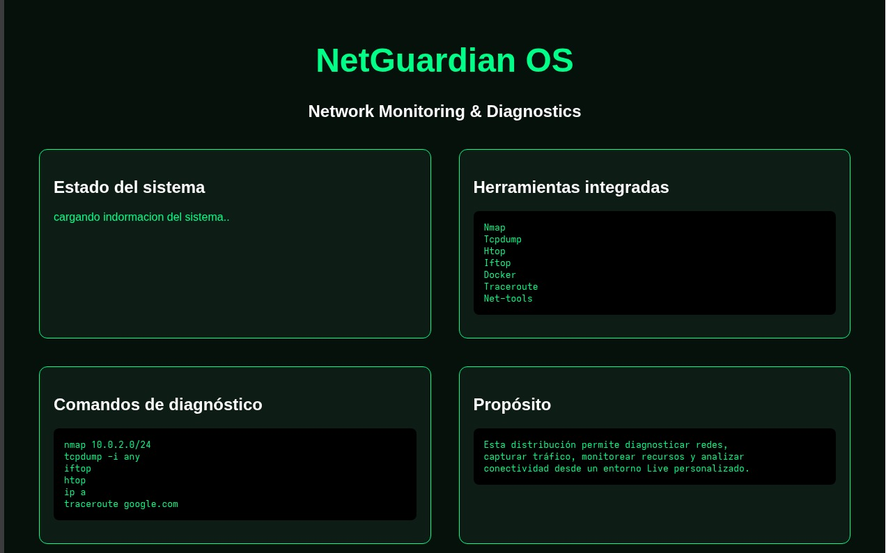
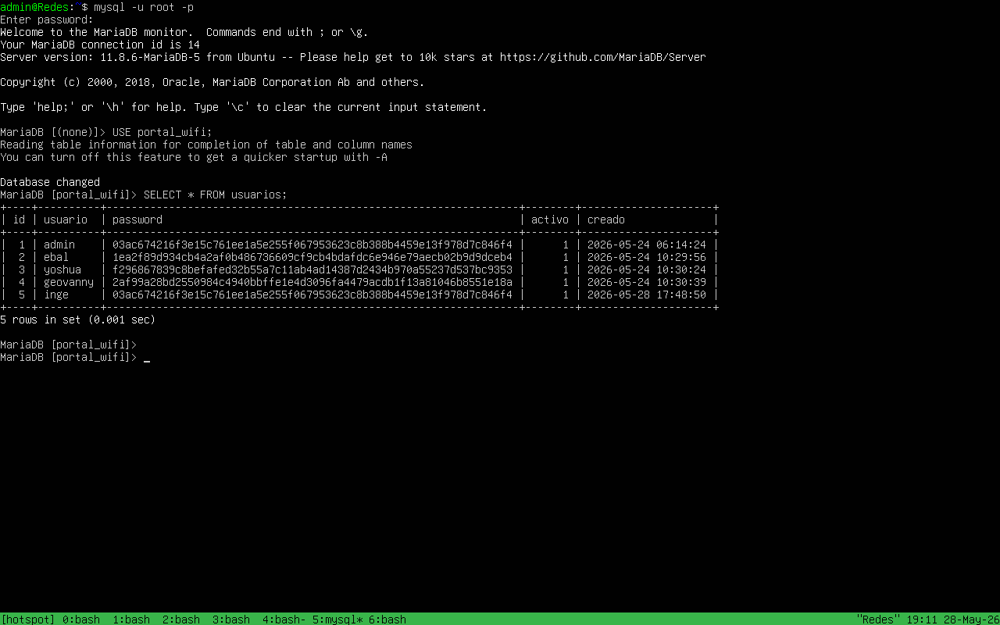
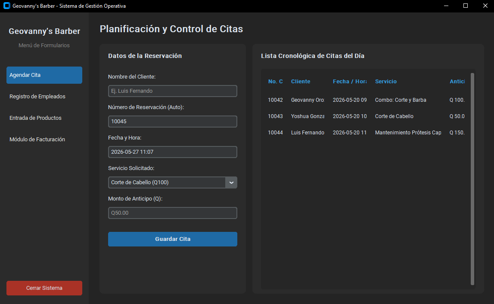

Trabajos realizados

NetGuardian OS: Distribución Linux Personalizada
Distribución Live ISO personalizada basada en Arch Linux, orientada al monitoreo de infraestructura y diagnóstico de redes en tiempo real. Integra un entorno gráfico ligero tipo Kiosco implementado sobre Openbox y Chromium, el cual despliega un dashboard centralizado que automatiza la ejecución de comandos de auditoría como Nmap y Tcpdump. Adicionalmente, implementa arquitectura en contenedores Docker para aislar servicios de análisis y utiliza timers de Systemd para gestionar la depuración automática de logs y tareas del sistema.

Portal Cautivo para Control de Redes Empresariales
Sistema integral de autenticación y gestión de red inalámbrica desplegado en un servidor Ubuntu Server. Implementa un portal cautivo mediante OpenNDS para interceptar y validar el tráfico de los usuarios antes de otorgar acceso a la red, combinándolo con un motor de filtrado DNS basado en Dnsmasq para bloquear dominios no autorizados y aplicar políticas de navegación por roles. Toda la administración de credenciales, consumo de ancho de banda y registro de sesiones opera bajo un panel de control propio construido sobre una arquitectura LNMP (Linux, Nginx, MariaDB, PHP-FPM).

Sistema de Gestión e Inventario - Geovanny's Barber
Aplicación de escritorio modular construida en Python aplicando principios de Programación Orientada a Objetos (POO) y una interfaz gráfica personalizada mediante Tkinter y TTK. El software automatiza las operaciones operativas y administrativas del negocio a través de 5 formularios interactivos: control perimetral de acceso e inicio de sesión de usuarios, agendamiento y reprogramación de citas, cálculo automatizado de comisiones para los barberos según servicios prestados, gestión y alertas de inventario de productos, y un sistema integrado para la emisión de facturas y cierres de caja.